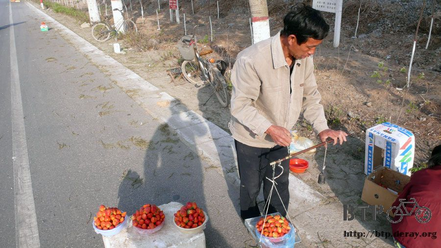
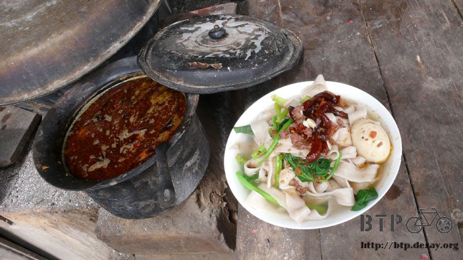
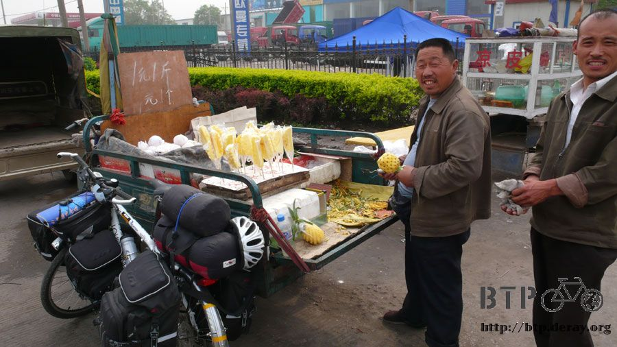
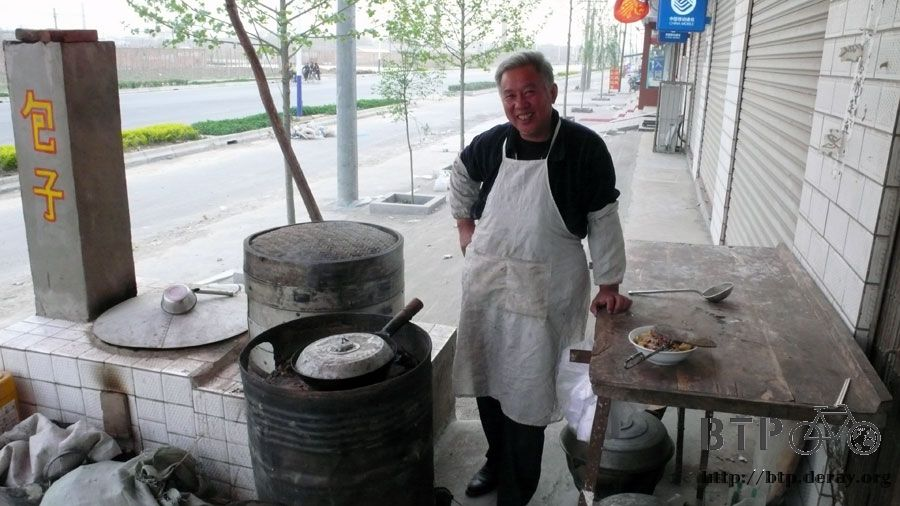

吹得我都睜不開眼了~_~
我貫徹自己要早起的目標，清晨四點眼睛就睜開了，看到外頭的天空真的是微亮，
我的老天爺，現在都是這麼早就天亮嗎？@"@
還是賴床了一下，但是還沒五點也就乖乖爬起床收拾行李了，
楊叔在昨天睡前還跑到我房裡聊天，他說我接下來一路要往西安走，
還有一千多公里，路很不好走，因為都是運煤的卡車，煤灰滿天飛，他一天騎車下來，臉都變成黑的，
去飯店吃飯的時候還被夥計笑說臉怎麼那麼黑XD
開朗又硬朗的楊叔，今天早上五點半就出發了，我也沒落後他太多，一個小時後換我也上路。
楊叔的目標是160之外的北京，我的目標則也是160之外的石家莊。
其實路線很單純，就沿著107國道一直走，怎麼樣也不要離開它，那肯定就會到的了。

早餐就吃前幾天買的核桃餅配開水，出發沒多久就看到路邊有小販在賣草莓，
現在已經是草莓的季節了嗎？
有點嘴饞所以停下來問了一下怎麼賣。
『十塊！』
我心裡想，一斤十塊，還真有點貴，沒辦法麻，畢竟是草莓，太便宜的話也說不過去，
那一斤十塊換算一下，就是五百公克43塊台幣，所以一百公克大約是八塊台幣，還是挺便宜的。
老闆看我一個人在那邊想半天，不知道在想什麼(我在心算啦)，就補充了一句
『五斤十塊！』
哇靠，是不是這麼便宜~_~

那就買個五塊錢吧，所以我一大早只花了台幣22塊錢就買一公斤多的草莓，
一路上邊騎車邊吃草莓，一口氣吃那麼多草莓，一開始雖然覺得好好吃，可是吃到後來真的很恐怖，
很像在參加恐懼大挑戰的吃毛毛蟲單元，一咬下去就噴出酸甜汁的紅色毛毛蟲，這就是我吃到後來的口感。
沒停過的一直吃，吃了一個小時，我真慶幸我終於把全部的草莓都吃光了。
在中國騎車跟在台灣環島的時候一樣，路人加油的聲音還不少，
百分之九十八的路人，會在我騎經過他們的時後猛盯著我瞧。
百分之六十的車輛，會在他們開車經過我的時候，回頭往我這猛看，
百分之大概三的路人，會跟我揮揮手、聊聊天、或是說聲加油、慢慢騎、一路順風之類的。
其實挺有溫暖的，雖然一個人，可是一點也不寂寞。

吃完一大堆的草莓之後，我覺得我這輩子能吃的草莓份量大概就這麼多了，已經足夠了。
很想吃點鹹的東西平衡一下，中午十一點吃午餐，
點了牛肉板麵，就是比較寬的粄條，配著青菜煮熟之後，淋上滷汁就行了，
麵一碗三塊，滷蛋一顆五角。那就加兩顆滷蛋湊整數吧。

又被問說要不要喝啤酒，真是萬年不變的問題。
『那就來一瓶吧。』
跟之前喝的雪花啤酒不一樣，這次喝的是『苦瓜爽』啤酒。
這名字取的真是好。啤酒那麼苦，有什麼好喝的呢？
『傷城』這部電影說：『酒好喝的地方，就在於它難喝。』說的真是好！
反正我喝酒跟喝水一樣，就當補充水分吧。

在這小店麵吃完午餐，趴著睡了半個小時，今天好加在太陽不大，
可是一整天都是風沙吹個不停，是那麼巧被我遇到沙塵暴了嗎~_~
太陽眼鏡的功能，除了阻紫外線、另外還可以阻擋小飛蟲的自殺式攻擊以及飛沙對眼睛的傷害。
今天騎107國道，真的有點悶，索性拿出了iPod來聽音樂，不然整個發慌不知道要幹嘛。
下午三點，到達一個叫做『正定』的地方，風沙已經大到快要看不見路了。
滿天的沙塵隨著超大的風吹來吹去，跟科幻電影一樣的畫面，就看著那沙像有生命一樣流竄。

騎到這邊嘴巴有點饞，路邊很多在賣鳳梨的小販，
他們都把鳳梨削成螺旋的紋路，然後一顆切成四份，用筷子串起來，一支一塊錢。
我在店旁吃了一支，順便跟老闆聊聊天，知道我要騎到西安，問我這要騎多久？
我說大概兩個星期吧，老闆就說下次放假他也要騎自行車回去，原來老闆是從西安到這裡來工作的。

下午還沒四點，我就到達了今天的目的地，石家莊。
這邊的平均樓層高度是一樓，如果要算到小數點的話，那就是一點五樓。
全部都是五金類的、維修的、塑膠的、馬達的一大堆的店家。
大家都沒有招牌，可是每間店的看板就是這間店那麼大了。
進到都市之後，風沙一點也沒有減弱，反而因為交通的混亂，而顯得更加的令人難受。

我用最快的速度，左閃右閃往前騎，逼不得早一分鐘離開這個混亂的城市。
反正城市的消費比較高，往外頭再騎一小段，一樣有住店和吃飯的地方，但價錢肯定便宜多了。
在找旅館的時候，看到有小販在賣我喜歡吃的大麻花。
走近一看，這麻花也太大了吧 XD 跟電線桿差不多粗的天津大麻花(我說真的，說謊我是豬八戒)，
老闆每個口味都先讓我試吃一下。說一斤有八塊的、十塊的、十二塊的。
挑了一個軟中帶硬的口味、還沾有白芝麻，老闆問我要多少，我嘴裡都是麻花，唔唔阿阿的，說買十塊就好了。
結果又秤了一大堆給我，說零頭多了好幾兩都不跟我算了，這些算十六塊行了。
我哩咧，我雖然很喜歡吃這個，但這麼多要吃到什麼時候，看來連續好幾天的早餐跟點心都可以靠這些大麻花撐很久了。

下午五點在離開石家莊沒多久的小鎮，找到一間『壹分利飯店』，住店一晚上也只要十塊錢。
老闆姓賈，賈叔跟我要身分證登記一下，我就推說前兩天住店也不用登記，我又不是不付錢，別那麼麻煩了。
就這樣輕鬆的應付掉拿出台胞證這個麻煩的問題。
順便問問賈叔，外頭這風沙是怎麼一回事呀。該不會成天都這麼吹吧？
賈叔說就春天的時候，連續吹個四～五天，一年就這麼一次。
那我運氣還真好，這樣也給我遇上了。~_~
把單車牽到房裡，所有卸下的包包都可以拍掉一層的沙，身上的外套一抖也是沙，臉上也是沙 T_T

晚上就在店裡吃了牛肉罩餅，聽名字我還以為是餅類的東西，
結果原來是把餅弄得一片一片的，然後放幾片滷牛肉，淋上熱騰騰的肉湯。放些香菜就完工了。
一碗3塊錢，還點了包子，價錢一問真是吐血，五個一塊錢。
為什麼包子可以賣的這麼便宜？還是我太大驚小怪了。

晚餐又喝了一瓶嘉禾啤酒，餐餐都喝酒這也不是辦法，下次要是有汽水就喝，不然就算了。
在風沙中騎了一整天車的關係，鼻涕擤出來，都變成黑色的。
本來這幾天擤鼻涕，只會有一些小飛蟲的屍體在裡頭，但是看到鼻涕變的黑黑的，還真有點哭笑不得(泣)
繼續閱讀：4.27 裝窮也是我的強項
中國-人民幣－ 1：4.3 台幣
4.26 |
總計：45元 |
草莓兩斤半5元、午餐牛肉板麵3元、滷蛋兩顆1元、苦瓜爽啤酒2元、鳳梨串兩隻2元、一大堆的天津大麻花16元、住店10元、晚餐牛肉罩餅3元、肉包子五個1元、嘉禾啤酒2元 |
|